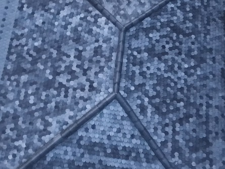

El origen: una fábrica en Itagüí
Juan David Ospina lleva más de 30 años en su fábrica de Itagüí, Cauchos Amazonas, haciendo suelas de zapato y bandas para marcas colombianas. Sabe de polímeros porque los trabaja todos los días, desde mucho antes de que eso se volviera un argumento de venta.
Hace 17 años fabricó las primeras tejas del sistema, sin pensar en venderlas. Esa primera cubierta sigue puesta y ha aguantado granizadas y vendavales sin una sola teja rota.
En 2022 su hija, Juanita Ospina, retomó el proyecto que su papá había dejado en pausa y lo convirtió en KASTON. Por eso no vendemos una promesa: vendemos algo con 17 años comprobados, hecho en la misma fábrica.
KASTON fabrica, no revende. Cada teja sale de esa planta en Itagüí.

Manifiesto
De las tejas para arriba está el exterior. De tu techo para abajo está tu familia. KASTON es lo que hay en medio.
Misión y visión
Misión
Fabricar cubiertas que no haya que volver a cambiar. Convertimos polímero recuperado del sector industrial en tejas que protegen una casa durante generaciones, hechas en nuestra propia planta y respaldadas metro a metro.
Visión
Que en 2030 cambiar el techo cada 15 años sea cosa del pasado en Colombia, y que la cubierta de polímero recuperado sea el estándar en Medellín, en el país y en la región andina.
Contra qué peleamos
La industria de la construcción normalizó algo absurdo: que la parte de la casa que protege a todas las demás sea la que primero se daña. El barro dura entre 20 y 40 años. El zinc, entre 15 y 30. Y cada reemplazo cuesta plata, obra y semanas de incomodidad.
No peleamos contra ninguna empresa. Peleamos contra la idea de que un techo es un consumible: el techo que instalas hoy debería ser el último que compras.
Qué rescatamos
Cada metro cuadrado de cubierta KASTON son 12,6 kg de polímero recuperado del sector industrial que dejan de ser residuo y pasan a ser techo. En una casa de 150 m², eso son cerca de 1,9 toneladas.
Datos oficiales
Para constructoras, proveedores y cualquiera que necesite saber con quién está tratando antes de comprar.
- Marca
- KASTON
- Responsable
- Juanita Ospina, fundadora
- Fabricación
- Producción propia en Cauchos Amazonas SAS, Itagüí. KASTON fabrica, no revende.
- Planta de producción
- Carrera 46 #50-75, Los Naranjos, Itagüí, Antioquia, Colombia
- Correo
- kaston.proyectos@gmail.com
- +57 318 897 8552
- @kaston.proyectos
- Equipo
- Juanita Ospina (fundadora, producto y mercado) · Juan David Ospina (fabricación) · Eliana Cano (comercial). Negocio familiar.
- Facturación
- ¿Necesitas RUT o documentos tributarios para registrarnos como proveedor? Escríbenos a kaston.proyectos@gmail.com y te los enviamos.
Legal y datos personales
Nada de esto vive escondido en letra chica. Si nos das tus datos para una cotización, tienes derecho a saber qué hacemos con ellos y a pedir que los borremos cuando quieras.
Política de Privacidad
Qué datos guardamos cuando cotizas o creas una cuenta, para qué los usamos y cómo pedir que los eliminemos.
LeerTérminos y Condiciones
Las reglas de uso del sitio y del cotizador, y el alcance de lo que una cotización significa.
LeerTratamiento de datos
¿Quieres consultar, corregir o eliminar tus datos personales? Escríbenos y lo resolvemos.
Escribir